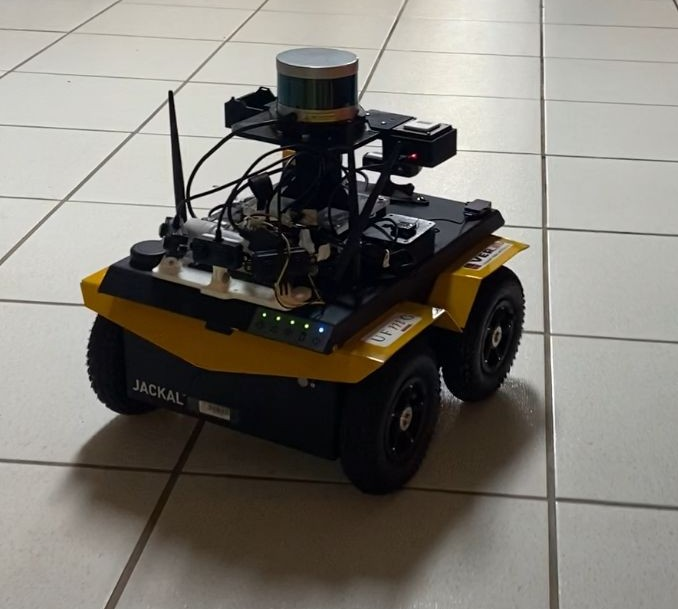
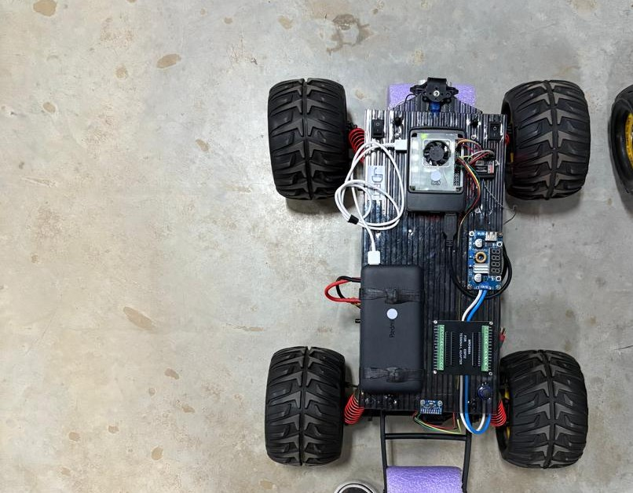
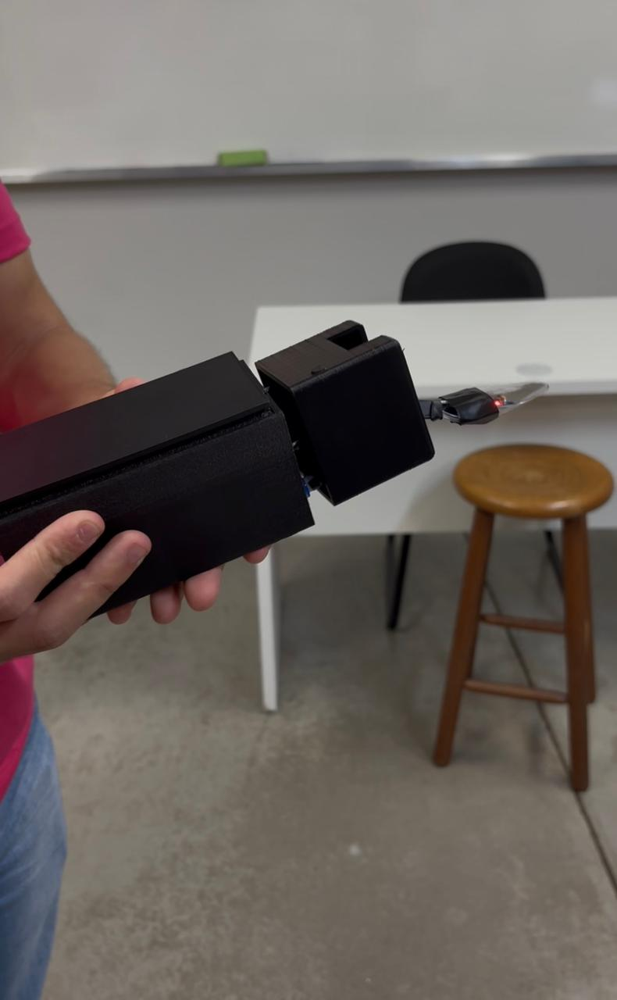
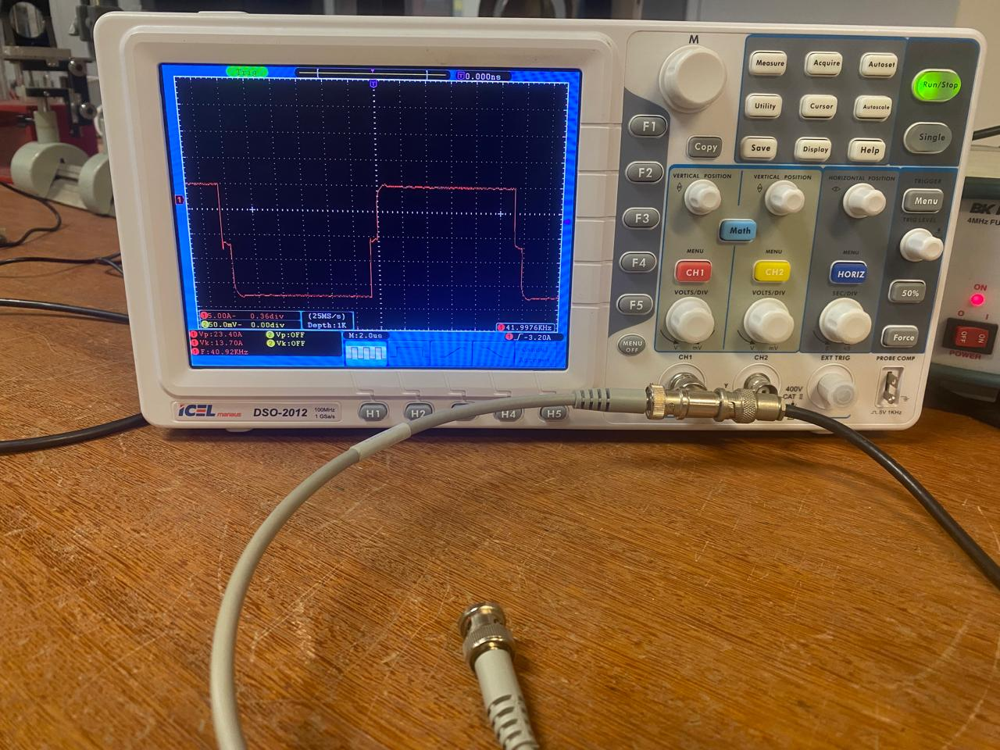

About Me
Me! Los Angeles attending RSS (Robotics: Science and Systems) in June 2025, best week of my life, see more about it in INSERT HERE.
Hi, I'm Manu! I'm a Control and Automation Engineering student at Federal University of Minas Gerais (UFMG). Currently, I’m part of the Computer Vision and Robotics Laboratory (VeRLab), working under the supervision of Professor Douglas Macharet and of Professor Héctor Azpúrua. I'm also working as a Software Engineer Intern at Komatsu MTS
I’m a curious girl, which is why my main interests lie in robotics and AI. I like the blend of AI models with low-level programming, hardware integration, and control systems. My research has included socially aware navigation, then a year in a autonomous car project and now I'm working in autonomous exploration of unstructrured enviroments using a Unitree Go2 (dog).
Main Interests: autonomous navigation and exploration, human-robot interaction, control theory
Current Random(ish) Interests: open-source operating system development.
Likes: all kinds of music, cycling, hiking and tea.
Dislikes: ROS dependecies....
Education
Bachelor of Control and Automation Engineering
2022/2 - expected 2027
I am pursuing a Bachelor's degree in Control and Automation Engineering at UFMG. This 5-year program combines electrical and electronics engineering with computer science, emphasizing the design and implementation of control systems.
Although I really like in control systems, I try to tailor my degree by choosing elective courses in areas I’m more passionate about, such as AI and robotics. (But the engineer in me will always enjoy exploding a few capacitors while building a circuit)
Relevant Course Work: Control Engineering, Digital Control, Artificial Neural Networks, Robotics Manipulators, Autonomous Vehicles, Real Time Programming
Publications
Adaptive Generalized Social Space Delimitation for Human-Robot Interaction Tasks
Manuela M. F. Silva, Aline F. F. Silva, Douglas G. Macharet
In 2024 Latin American Robotics Symposium (LARS), 2024
Read the full paper here.
Projects
Latest
Previous
(Paper!) Adaptive Generalized Social Space Delimitation
Ensuring comfortable human-robot interactions through dynamic adjustments.
Autonomous Mobile Robot
Spatially aware autonomous navigation and SLAM integration.
Autonomous Vehicles Competition
Development of a low-level controller, path planner and obstacle avoider for a autonomous little vehicles challenge.
Self-Stabilizing Spoon
Development of self-stabilizing spoon controller project for our controls lab class.
Physics Demonstrations Laboratory
Designed and conducted experimental physics demonstrations.
Extras
Here's a video I created to present a bit about my research for UFMG's Semana do Conhecimento 2024. It's in Portuguese!
Contact
Feel free to contact me on manu.moura.fs@gmail.com.
You can also reach out through:
♪ ♬ヾ(´︶`♡)ﾉ♬♪